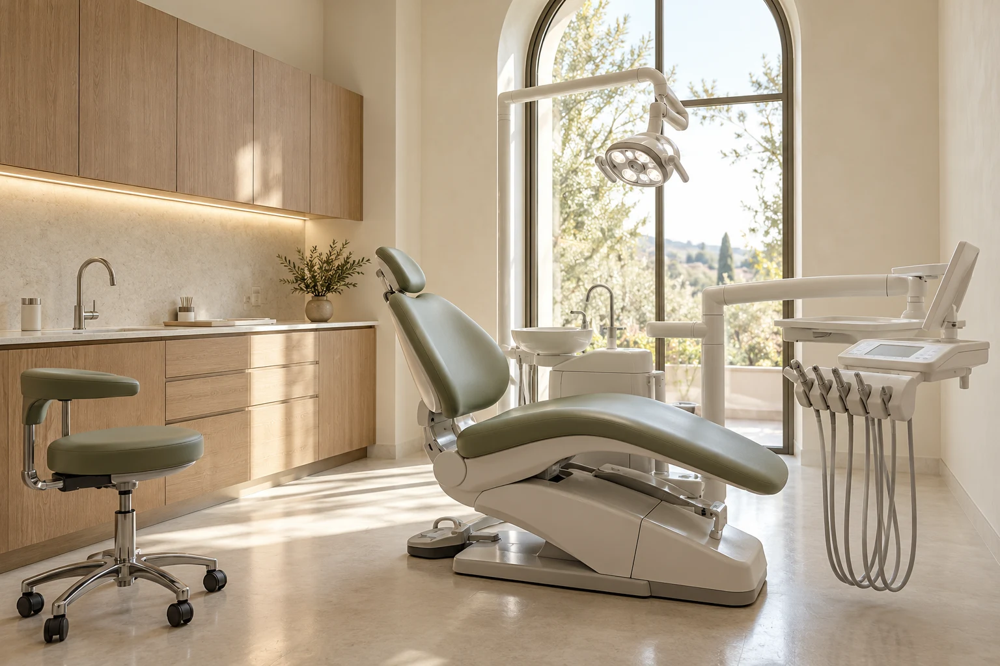

Стоматология с вниманием к человеку
Улыбаться.
Не задумываться.
Когда зубы в порядке, можно просто жить.
Поможем начать с понятного первого шага.
вы.
Знакомьтесь, Лира
Хорошая стоматология
начинается с доверия.
Мы придумали клинику, в которой есть место вашим вопросам. Где объясняют, что происходит, обсуждают варианты и не торопят с решением.
От профилактики до восстановления зубов — один последовательный путь. С понятным планом, вниманием к ощущениям и временем на разговор.
Направления
Всё для вашей
естественной улыбки.
Не обязательно знать название процедуры.
Начните с того, что важно именно вам.
Знакомство и диагностика
Разобраться в состоянии зубов и спокойно обсудить план.
Как проходит лечениеЛечение и профилактика
Сохранить здоровье зубов и сделать уход понятной привычкой.
Как проходит лечениеРовная улыбка
Обсудить прикус, брекеты и элайнеры вместе с ортодонтом.
Как проходит лечениеВосстановление зубов
Собрать последовательный план восстановления функции и эстетики.
Как проходит лечениеДля маленьких пациентов — знакомство с кабинетом, спокойная адаптация и разговор с родителями.
Первый визит
Можно
без неизвестности.
До начала лечения вы понимаете, что предлагаем, зачем это нужно и какие есть варианты.
- 01
Знакомимся и слушаем
Ваши вопросы, ожидания и предыдущий опыт. Для нас это такая же важная часть встречи, как сам осмотр.
- 02
Смотрим на всю картину
Осмотр и обсуждение имеющихся исследований. Дополнительная диагностика — по решению врача, с объяснением её цели.
- 03
Составляем понятный план
Этапы, варианты и стоимость. Вы можете задать вопросы и взять время на решение.
Люди, с которыми спокойно
Сначала знакомство.
Потом доверие.
Обсуждать здоровье проще,
когда знаешь человека напротив.
В карточке — направление работы, подход к консультации и возможность выбрать первый визит.
Без мелкого шрифта
Понимать стоимость.
До начала лечения.
Ориентиры для знакомства с услугами.
Итоговый план определяется после осмотра.
Цены — примеры для концепта, не публичная оферта реальной клиники. В карточках указано, к чему относится стоимость.

Пространство Лиры
Здесь можно
выдохнуть.
Мягкий свет, отдельные кабинеты и место для спокойного разговора. Мы продумали среду, в которой внимание остаётся на человеке.
- Светлые отдельные кабинеты
- Время на вопросы и обсуждение
- Понятный путь от осмотра к плану
Вопросы перед встречей
Лучше спросить.
Мы объясним.
Если я давно не был у стоматолога?
Начать можно со знакомства и осмотра. Расскажите, что вас беспокоит и каким был прошлый опыт. Дальнейшие шаги обсуждаются после оценки ситуации — заранее выбирать лечение не нужно.
Можно сначала узнать план и стоимость?
Да, именно для этого нужна консультация. Врач объясняет варианты и этапы, а итоговая смета составляется после диагностики. До согласования плана начинать лечение не требуется.
Как выбрать нужного специалиста?
Если вы ещё не знаете направление, выбирайте знакомство и диагностику. В реальной клинике администратор уточняет запрос и помогает определить подходящий первый приём.
Нужно ли приносить старые снимки?
Возьмите доступные исследования и выписки, если они есть. Их актуальность и необходимость новых исследований определяет врач на консультации.
Можно ли записать ребёнка?
В концепте предусмотрено отдельное детское направление. Возраст, особенности адаптации и формат первого посещения обсуждаются с клиникой до визита.
Здесь можно записаться на настоящий приём?
Нет. Это авторский концепт сайта. Форма показывает выбор направления, дня и времени, после чего позволяет скачать пример плана визита. Бронирование не создаётся.
Каждая улыбка начинается со знакомства
Ваш первый шаг.
В вашем темпе.
Выберите направление и посмотрите,
как может выглядеть запись на приём.